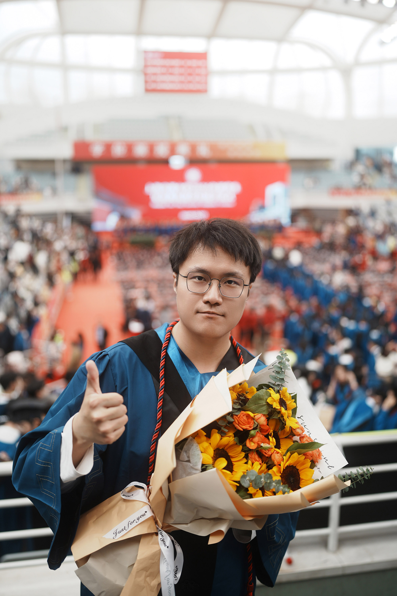
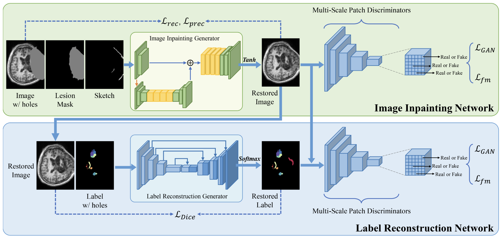
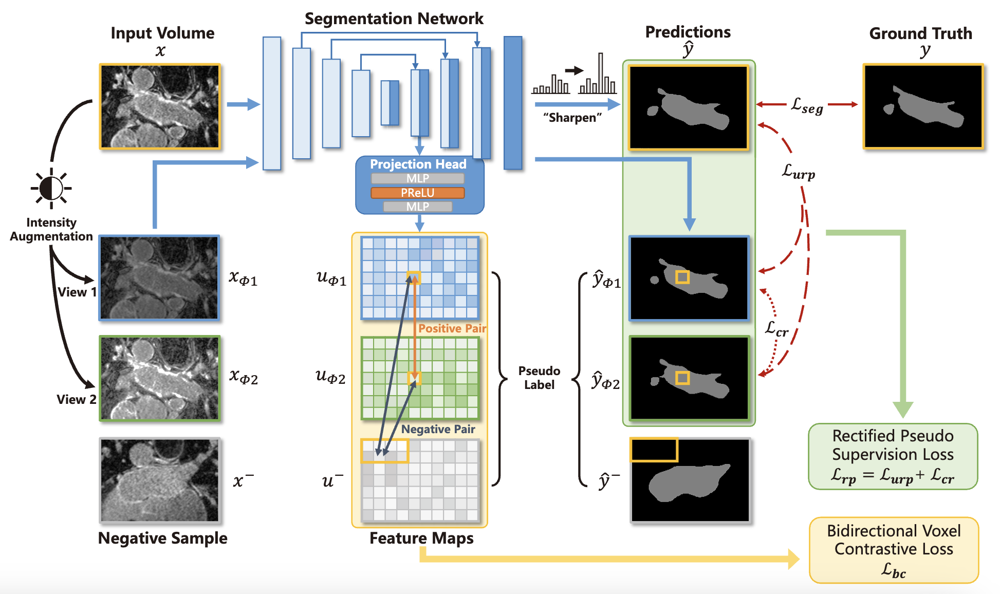
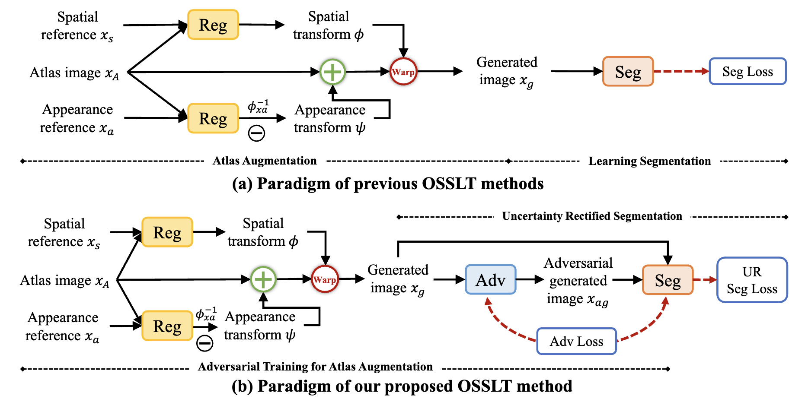
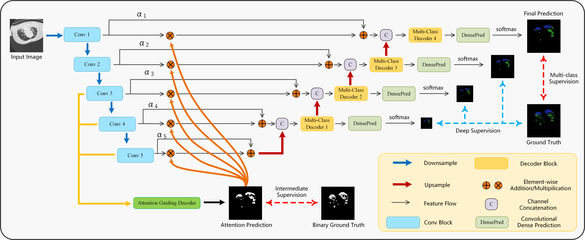
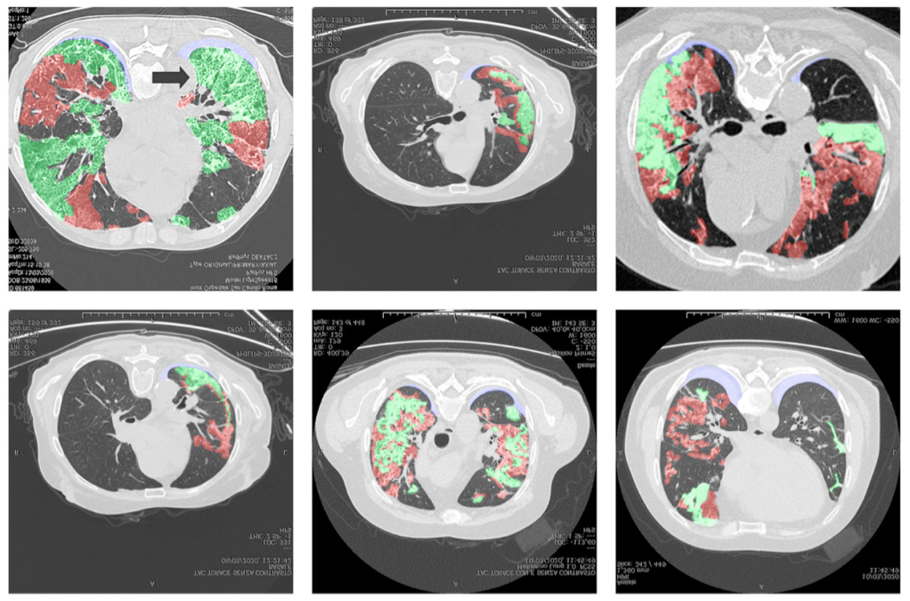

Xiangyu Zhao (赵翔宇)Master Graduate
School of Biomedical Engineering, |
 [Curriculum Vitae] |


Biography
I am a Master graduate from School of Biomedical Engineering , Shanghai Jiao Tong University (SJTU), supervised by A/Prof. Lichi Zhang and A/Prof. Qian Wang at Medical Imaging Computing Lab.
After my graduation, I will join Monash Medical AI (MMAI) Group at Monash University as a Ph.D. student in 2024, under the supervision of A/Prof. Zongyuan Ge.
My research interests lie in the interdisciplinary area of computer vision and medical image analysis.
I have been working on data-efficient learning during my master's thesis, including data synthesis, semi-supervised learning, and few-shot learning.
My recent research interests lies in the development of foundation and generalized medical AI methods, where I have been working as a research intern at Shanghai United Imaging Intelligence in this area.
I have recently received my M.Eng. degree from School of Biomedical Engineering, Shanghai Jiao Tong University (SJTU) in the spring of 2024, and was awarded as Shanghai Excellent Graduate Student.
Before that, I have spent 4 years in Beijing, where I received my B.Eng. degree from School of Biological Science and Medical Engineering, Beihang University (BUAA), and was awarded as Beijing Excellent Graduate Student as well.
During my undergraduate study, I finished my undergraduate thesis under the supervision of A/Prof. Guanglei Zhang.
Besides the time spent on research, I would spare my leisure time in photography, which I have been interested in for more than 7 years.
I would shoot photos with my Sony Alpha-7 IV digital camera as well as films from Kodak and Fujifilm.
News
| 2024/06 | One paper has been accepted by MICCAI 2024 after rebuttal. |
| 2024/03 | I obtained my Master's Degree from SJTU and was awarded as Shanghai Excellent Graduate Student. |
| 2023/12 | One paper has been accepted by Computerized Medical Imaging and Graphics. |
| 2023/09 | One paper has been accepted by IEEE Journal of Biomedical and Health Informatics. |
| 2023/06 | Three papers have been accepted by MICCAI 2023 after rebuttal. |
| 2023/04 | Two papers have been accepted by MICCAI 2023 as early accepted papers. |
| 2022/08 | One paper has been accepted by IEEE Transactions on Medical Imaging. |
| 2021/06 | I obtained my Bachelor's Degree from BUAA and was awarded as Beijing Excellent Graduate Student. |
| 2021/04 | One paper has been accepted by Computers in Biology and Medicine. |
Selected Publications
|  | sTBI-GAN: An Adversarial Learning Approach for Data Synthesis on Traumatic Brain Segmentation Xiangyu Zhao, Di Zang, Sheng Wang, Zhenrong Shen, Kai Xuan, Zeyu Wei, Zhe Wang, Ruizhe Zheng, Xuehai Wu, Zheren Li, Qian Wang, Zengxin Qi, Lichi Zhang Computerized Medical Imaging and Graphics (CMIG), 2024. |
|  | RCPS: Rectified Contrastive Pseudo Supervision for Semi-Supervised Medical Image Segmentation Xiangyu Zhao, Zengxin Qi, Sheng Wang, Qian Wang, Xuehai Wu, Ying Mao, Lichi Zhang IEEE Journal of Biomedical and Health Informatics (IEEE JBHI), 2023. |
|  | One-Shot Traumatic Brain Segmentation with Adversarial Training and Uncertainty Rectification Xiangyu Zhao, Zhenrong Shen, Dongdong Chen, Sheng Wang, Zixu Zhuang, Qian Wang, Lichi Zhang International Conference on Medical Image Computing and Computer-Assisted Intervention (MICCAI), 2023. [paper][code][project page] |
|  | Prior Attention Network for Multi-Lesion Segmentation in Medical Images Xiangyu Zhao, Peng Zhang, Fan Song, Chenbin Ma, Guangda Fan, Yangyang Sun, Youdan Feng, Guanglei Zhang IEEE Transactions on Medical Imaging (IEEE TMI), 2022. |
|  | D2A U-Net: Automatic Segmentation of COVID-19 CT Slices Based on Dual Attention and Hybrid Dilated Convolution Xiangyu Zhao, Peng Zhang, Fan Song, Guangda Fan, Yangyang Sun, Yujia Wang, Zheyuan Tian, Luqi Zhang, Guanglei Zhang Computers in Biology and Medicine (CiBM), 2021. [paper] |
Honors & Awards
| Shanghai Excellent Graduate Student, 2024 |
| Beijing Excellent Graduate Student, 2021 |
| COMAP's MCM/ICM Contest, Meritorious Winner, 2020 |
Employment
-
United Imaging Intelligence (UII), Shanghai, China.Aug. 2023 – June 2024
Research Intern
Topic: Foundation Segmentation Model in Radiology
-
Institute of Automation, Chinese Academy of Sciences, Beijing, China.Feb. 2020 – June 2020
Research Intern
Topic: Object Detection on Large-Scale Images
Teaching
| 2022-2023 | Spring | TA in Computer vision in Biomedical Engineering |
© Xiangyu Zhao | Last updated: June 19th, 2024